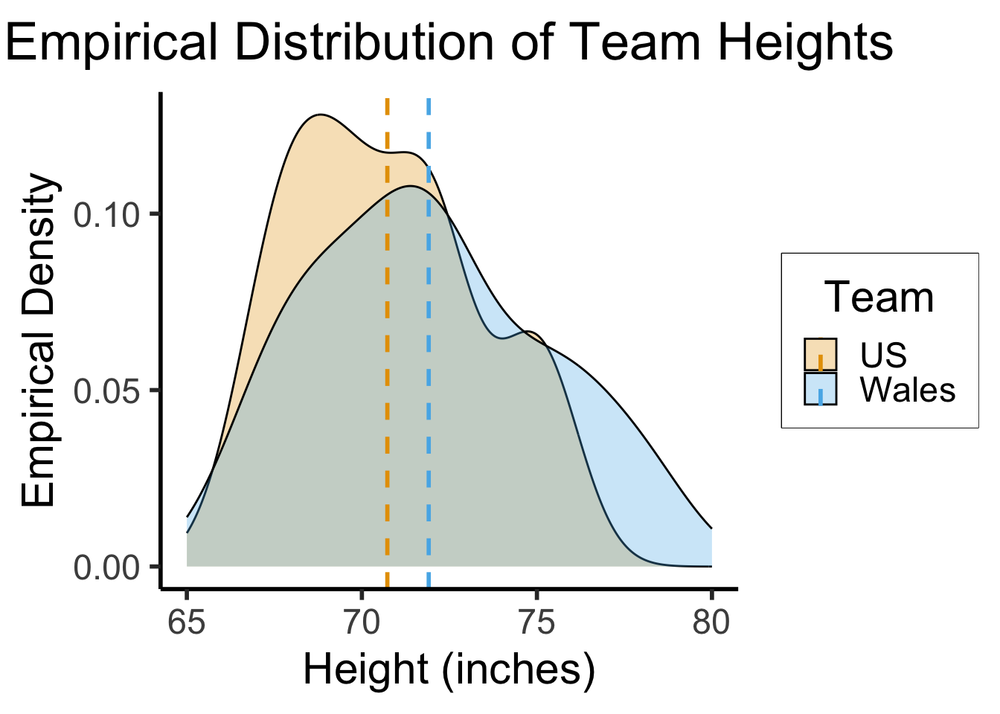
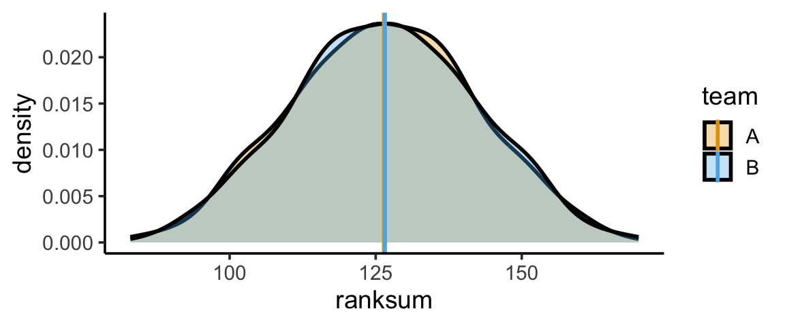
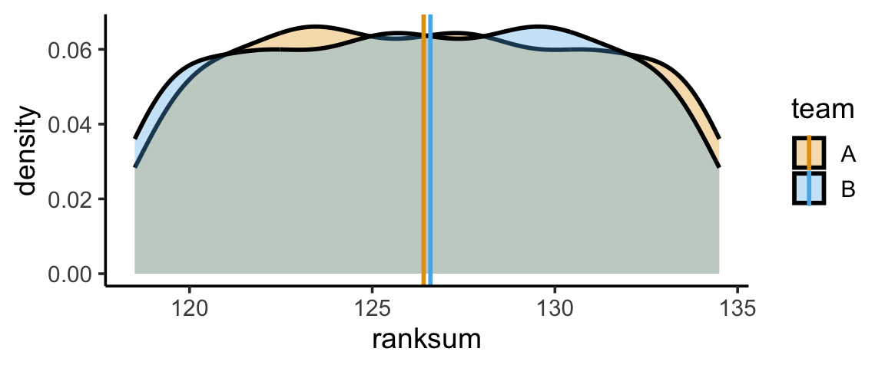

source("../dsan-globals/_globals.r")Week 14: Non-Parametric Statistics
DSAN 5100: Probabilistic Modeling and Statistical Computing
Section 03
Class Sessions
Non-Parametric Statistics: Overview
\[ \DeclareMathOperator*{\argmax}{argmax} \DeclareMathOperator*{\argmin}{argmin} \newcommand{\bigexp}[1]{\exp\mkern-4mu\left[ #1 \right]} \newcommand{\bigexpect}[1]{\mathbb{E}\mkern-4mu \left[ #1 \right]} \newcommand{\definedas}{\overset{\text{defn}}{=}} \newcommand{\definedalign}{\overset{\phantom{\text{defn}}}{=}} \newcommand{\eqeventual}{\overset{\text{eventually}}{=}} \newcommand{\Err}{\text{Err}} \newcommand{\expect}[1]{\mathbb{E}[#1]} \newcommand{\expectsq}[1]{\mathbb{E}^2[#1]} \newcommand{\fw}[1]{\texttt{#1}} \newcommand{\given}{\mid} \newcommand{\green}[1]{\color{green}{#1}} \newcommand{\heads}{\outcome{heads}} \newcommand{\iid}{\overset{\text{\small{iid}}}{\sim}} \newcommand{\lik}{\mathcal{L}} \newcommand{\loglik}{\ell} \DeclareMathOperator*{\maximize}{maximize} \DeclareMathOperator*{\minimize}{minimize} \newcommand{\mle}{\textsf{ML}} \newcommand{\nimplies}{\;\not\!\!\!\!\implies} \newcommand{\orange}[1]{\color{orange}{#1}} \newcommand{\outcome}[1]{\textsf{#1}} \newcommand{\param}[1]{{\color{purple} #1}} \newcommand{\pgsamplespace}{\{\green{1},\green{2},\green{3},\purp{4},\purp{5},\purp{6}\}} \newcommand{\prob}[1]{P\left( #1 \right)} \newcommand{\purp}[1]{\color{purple}{#1}} \newcommand{\sign}{\text{Sign}} \newcommand{\spacecap}{\; \cap \;} \newcommand{\spacewedge}{\; \wedge \;} \newcommand{\tails}{\outcome{tails}} \newcommand{\Var}[1]{\text{Var}[#1]} \newcommand{\bigVar}[1]{\text{Var}\mkern-4mu \left[ #1 \right]} \]
How is Non-Parametric Different from What We’ve Been Doing?
- Statistical models and hypothesis tests we’ve learned thus far were parametric
- Meaning: Assume population follows this distribution, then estimate population parameters (e.g., \(\param{\mu}\) and \(\param{\sigma}\)) using MLE, GMM, etc.
What Makes It “Non-Parametric”?
- We’ve talked about how the Normal distribution is “standard” in multiple senses:
- Empirically: It arises from common processes in nature, like random walks
- Theoretically: It is the maximum-entropy distribution which encodes only1 knowledge of a mean \(\mu\) and a variance \(\sigma^2\)
- Then we talked about estimating these parameters (\(\param{\mu}\) and \(\param{\sigma^2}\)) from data: different ways to amalgamate information from an observed sample \(\mathbf{X} = (X_1, \ldots, X_n)\) to estimate (unobserved) \(\param{\mu}\) and \(\param{\sigma}^2\) with minimal bias and variance

- We therefore “funnel” all of the information contained in \(\mathbf{X}\) down into estimates of \(\param{\mu}\) and \(\param{\sigma^2}\)
- But… what if we’re wrong? What if the DGP is not based on a Normal distribution?
What If We’re Wrong?
- It is this concern: the fact that all of our results, all of our confidence about our estimates thus far, come as a result of making distributional assumptions
- Non-parametric analysis tries to avoid this potential catastrophe by making as few distributional assumptions as possible
- Recall how parameters of a distribution determine all information you could possibly want to know about the distribution (via Moment Generating Function):
| Type of Distribution | + | Parameter Values | = | All Possible Info (MGF) |
|---|---|---|---|---|
| Normal \(~\mathcal{N}(\param{\mu}, \param{\sigma^2})\) | + | \(\param{\mu} = m\), \(\param{\sigma^2} = s^2\) | = | \(M_t(X) = \exp[mt + s^2t^2/2]\) |
| Uniform \(~\mathcal{U}(\param{\alpha},\param{\beta})\) | + | \(\param{\alpha} = a\), \(\param{\beta} = b\) | = | \(M_t(X) = \frac{e^{tb} - e^{ta}}{t(b-a)}\) |
| Poisson \(~\text{Pois}(\param{\lambda})\) | + | \(\param{\lambda} = \ell\) | = | \(M_t(X) = \exp[\ell(e^t - 1)]\) |
Avoiding Wrongness Disasters: The Sign Test
Sign Test Intuition
Instead of trying to estimate all possible info about the underlying distribution, we only estimate one piece of information that we need to test a hypothesis
Example: for populations \(\chi\), \(\psi\), if \(H_A: \mu_\chi > \mu_\psi\), skip intermediate step of estimating distributions \(\mathcal{D}_\chi(\param{\theta})\), \(\mathcal{D}_\psi(\param{\theta})\) from samples \(\mathbf{X}\), \(\mathbf{Y}\)!
Instead, just directly “extract” greater than vs. not greater than info from \(\mathbf{X}\) and \(\mathbf{Y}\) (median \(m\) always exists as “pivot” for well-behaved \(X\), \(\Pr(X > m) = 0.5\))
It will help us to define \(\text{Sign}(x) = \begin{cases}\phantom{-}1 &\text{if } x > 0 \\ \phantom{-}0 &\text{if }x = 0 \\ -1 &\text{if }x < 0\end{cases}\)
If \(\mathbf{X} = (15, 7, 11, 3)\), \(\mathbf{Y} = (-3, 4, 1, 4)\), we can compute a “greater-than score”:
\[ \begin{align*} \sum_{i=1}^N \sign(X_i - Y_i) &= \sign(15 - (-3)) + \sign(7-4) + \sign(11-1) + \sign(3-4) \\ &= 1 + 1 + 1 + -1 = 2 \end{align*} \]
- So long as slots are comparable (notice \(\mathbf{X}, \mathbf{Y}\) are ordered), we can compare this with \(0\), our expectation if \(\chi = \psi\), regardless of underlying distributions \(\mathcal{D}_\chi, \mathcal{D}_\psi\).
Procedure in General
- \(\mathbf{X}\): size-\(N\) sample from population \(\chi\); \(\mathbf{Y}\): size-\(N\) sample from population \(\psi\)
- (Rather than estimating \(\mathcal{D}_\chi\) from \(\mathbf{X}\) and \(\mathcal{D}_\psi\) from \(\mathbf{Y}\)), we directly pair datapoints \(X_i \in \mathbf{X}\) and \(Y_i \in \mathbf{Y}\) and compute the sign of their difference:
\[ \text{GT}_i(X_i, Y_i) = \text{Sign}(X_{i} - Y_{i}) = \begin{cases} \phantom{-}1 &\text{if }X_{i} > Y_{i}, \\ \phantom{-}0 &\text{if }X_{i} = Y_{i}, \\ -1 &\text{if }X_{i} < Y_{i} \end{cases} \]
We can then sum each pair’s score into an aggregate score:
\[ \text{GT}(\mathbf{X}, \mathbf{Y}) = \sum_{i=1}^NGT_i(X_i,Y_i) \]
such that if \(\chi\) and \(\psi\) are in fact the same population, we expect \(GT(\mathbf{X}, \mathbf{Y}) = 0\) (positive and negative values of \(GT_i\) cancel each other out, for sufficiently large \(N\))
Non-parametric tests which use this value as a test statistic are called Sign tests
Mann-Whitney U Test: Paired Observations → Paired Samples
- Also called the Wilcoxon Rank Sum Test
What If We Can’t Pair Observations One-to-One?
- For example, what if samples aren’t the same size: \(N_X = |\mathbf{X}| \neq N_Y = |\mathbf{Y}|\)?
- Intuition: If there is no “natural” one-to-one pairing of the observations, we can instead consider all possible pairs \((X_{i}, Y_{j}) \in \mathbf{X} \times \mathbf{Y}\)
- We can then count how often \(X_i > Y_j\), how often \(Y_j > X_i\), and compare this to our expectation of how often these would occur if \(\chi = \psi\) (that is, if \(\mathbf{X}\) and \(\mathbf{Y}\) were in fact drawn from the same population)
Computational Efficiency
- We could just go ahead with this intuition, checking every pair and seeing how often \(X_i > Y_j\) vs. how often \(Y_j > X_i\), but this is computationally expensive for large samples (requiring \(O(N_1N_2)\) comparisons)
- So, let’s walk through an example with pairwise comparisons, but try to think of an equivalent yet sub-quadratic method for achieving the same results!
Pairwise Comparison Mode
- Let \(\mathbf{X} = \{5, 9, 7\}, \mathbf{Y} = \{7, 6\}\), and consider \(X_i > Y_j\) vs. \(Y_j > X_i\) for all pairs:
- Give 1 point to \(\mathbf{X}\) if \(X_i > Y_j\), 1 point to \(\mathbf{Y}\) if \(Y_j > X_i\), 0.5 points to both if \(X_i = Y_j\).
| \(X_i\) | \(Y_j\) | \(>\) | \(=\) | \(<\) |
|---|---|---|---|---|
| 5 | 7 | +1 | ||
| 5 | 6 | +1 | ||
| 9 | 7 | +1 | ||
| 9 | 6 | +1 | ||
| 7 | 7 | +0.5 | ||
| 7 | 6 | +1 | ||
| Final | Score: | \(S_{\mathbf{X}} = 3.5\) | \(S_{\mathbf{Y}} = 2.5\) |
Ranking Mode
- Now consider the combined dataset \(\mathbf{Z} = \mathbf{X} \oplus \mathbf{Y} = (5_X, 9_X, 7_X, 7_Y, 6_Y)\)
- Let’s see what we get when we rank the values in \(\mathbf{X}\) and \(\mathbf{Y}\) separately, then rank the same values within \(\mathbf{Z}\), keeping track of whether each number is from \(\mathbf{X}\) or \(\mathbf{Y}\):
| Values | \(5_X\) | \(6_Y\) | \(7_X\) | \(7_Y\) | \(9_X\) | |
| Rank in \(\mathbf{X}\) | \([1]_{X/\mathbf{X}}\) | \([2]_{X/\mathbf{X}}\) | \([3]_{X/\mathbf{X}}\) | \(\Sigma_{X/\mathbf{X}} = [6]\) | ||
| Rank in \(\mathbf{Y}\) | \([1]_{Y/\mathbf{Y}}\) | \([2]_{Y/\mathbf{Y}}\) | \(\Sigma_{Y/\mathbf{Y}} = [3]\) | |||
| Rank in \(\mathbf{Z}\) | \([1]_{X/\mathbf{Z}}\) | \([2]_{Y/\mathbf{Z}}\) |
\([3.5]_{X/\mathbf{Z}}\) | \([3.5]_{Y/\mathbf{Z}}\) |
\([5]_{X/\mathbf{Z}}\) | \(\Sigma_{X/\mathbf{Z}} = [9.5]\) \(\Sigma_{Y/\mathbf{Z}} = [5.5]\) |
- Thus, by subtracting single-sample ranks from combined-sample ranks, we obtain:
- \(S_{\mathbf{X}} = \Sigma_{X/\mathbf{Z}} - \Sigma_{X/\mathbf{X}} = 9.5 - 6 = 3.5\)
- \(S_{\mathbf{Y}} = \Sigma_{Y/\mathbf{Z}} - \Sigma_{Y/\mathbf{Y}} = 5.5 - 3 = 2.5\) 🤯
- And yet, this runs in \(O((N_1+N_2)\log(N_1+N_2)) < O(N_1N_2)\)
Example: 2022 World Cup
- Heights (inches) of Welsh vs. US national football teams (\(N = 22\) players total):
| Wales | 78 | 71 | 76 | 75 | 72 | 70 | 68 | 72 | 69 | 73 | 67 | \(\overline{X} \approx 71.91\) |
| USA | 75 | 68 | 75 | 69 | 70 | 70 | 72 | 67 | 72 | 72 | 70 | \(\overline{Y} \approx 70.73\) |
Code
library(tidyverse)
# Manual (via tibble)
# us_heights <- tibble(height=c(75, 68, 74, 68, 68, 70, 72, 67, 72, 72, 70))
# corrected
us_heights <- tibble(height=c(75, 68, 75, 69, 70, 70, 72, 67, 72, 72, 68))
mean_us <- mean(us_heights$height)
us_heights <- us_heights |> mutate(Team = "US")
wales_heights <- tibble(height=c(78, 71, 76, 75, 72, 70, 68, 72, 69, 73, 67))
mean_wales <- mean(wales_heights$height)
# From csv
# https://www.fifa.com/en/match-centre/match/17/255711/285063/400235455
team_df <- read_csv("assets/wc_usa_wales.csv")
# team_df |> group_by(team) |> summarize(height_mean = mean(height_in))
mean_df <- tibble(mean_height = c(mean_us, mean_wales), Team = c("US", "Wales"))
wales_heights <- wales_heights |> mutate(Team = "Wales")
players = bind_rows(us_heights, wales_heights)
ggplot(players, aes(x=height, fill=Team)) +
geom_density(
alpha=0.3, adjust=4/5
) +
geom_vline(
data=mean_df,
aes(xintercept=mean_height, color=Team),
linetype = "dashed",
linewidth = g_linewidth
) +
xlim(c(65,80)) +
dsan_theme("half") +
scale_fill_manual(values=c(cbPalette[1], cbPalette[2])) +
labs(
title = "Empirical Distribution of Team Heights",
x = "Height (inches)",
y = "Empirical Density"
)
Samples \(\rightarrow\) Populations
- We know that the sampled heights of Welsh football players (\(\mathbf{X}\)) are (on average) greater than the sampled heights of US football players (\(\mathbf{Y}\)).
- But are heights in fact greater among the population of Welsh football players (\(\chi\)), relative to the population of US football players (\(\psi\))?
The Non-Parametric Fork in the Road
- Recall: in parametric tests, when comparing means, we analyzed the difference in the sample means relative to their variability and summarized the sample information in a test statistic: for example, \(t = \frac{\overline{X} - \mu_H}{\widehat{\sigma} / \sqrt{N}}\)
- We could compute this test statistic, but it would implicitly depend on an assumption of the underlying DGP: that heights follow a Normal distribution.
- Here, instead, we produce a test statistic based on the ranks!
- Test statistics should measure how surprised we would be if we observed what we observed in a world where the null hypothesis is true
- Equivalently, it should be low if the observed difference could feasibly have occurred just due to random noise (i.e., if we’re looking at noisy data from world where null hypothesis is true)
- So, let’s think in these terms about the ranks of each datapoint, to develop a non-parametric test statistic based on the ranks
Choosing Non-Parametric Hypotheses
- The empirical distributions from the previous slide, and the small sample size (\(N_1 = N_2 = 11\)), motivate our use of a nonparametric test!
- Assuming \(X \sim \mathcal{D}_1\) and \(Y \sim \mathcal{D}_2\) (but not assuming the parametric forms of \(\mathcal{D}_1\) or \(\mathcal{D}_2\)!), we can test:
- \(H_0: \Pr(X > Y) = \Pr(Y > X)\)
- \(H_1: \Pr(X > Y) \neq \Pr(Y > X)\)
Sorting and Ranking Observations
| Original Data | Sorted Total Samples | Rank | |||
|---|---|---|---|---|---|
| USA | Wales | USA | Wales | USA | Wales |
| 75 | 78 | 67 | 67 | 1.5 | 1.5 |
| 68 | 71 | 68 | 68 | 4 | 4 |
| 75 | 76 | 68 | 4 | ||
| 69 | 75 | 69 | 69 | 6.5 | 6.5 |
| 70 | 72 | 70 | 70 | 9 | 9 |
| 70 | 70 | 70 | 9 | ||
| 72 | 68 | 71 | 11 | ||
| 67 | 72 | 72 | 72 | 14 | 14 |
| 72 | 69 | 72 | 14 | ||
| 72 | 14 | ||||
| 72 | 73 | 72 | 14 | ||
| 68 | 67 | 73 | 17 | ||
| 75 | 75 | 19 | 19 | ||
| 75 | 19 | ||||
| 76 | 21 | ||||
| 78 | 22 | ||||
Our Rank-Based Test Statistic
- Sums of ranks relative to the combined dataset: \(\Sigma_{X/\mathbf{Z}} = 112.5\), \(\Sigma_{Y/\mathbf{Z}} = 140.5\).
- And then sum the ranks in each group, relative to the same group… In general, if we have \(N\) ranked datapoints (so, datapoints given labels \(\{1, 2, \ldots, N\}\)), what will the sum of these individual ranks be?
\[ \sum_{i=1}^{N}i = \underbrace{\overbrace{(1 + N)}^{N + 1} + \overbrace{(2 + (N-1))}^{N + 1} + \cdots}_{N/2\text{ terms}} = \frac{N(N+1)}{2} \]
- So, in this case,
\[ \Sigma_{X/\mathbf{X}} = \Sigma_{Y/\mathbf{Y}} = \sum_{i=1}^{11}i = \frac{11(12)}{2} = 66 \]
- Giving us the test statistics
\[ \begin{align*} U_X &= 112.5 - 66 = 46.5, \; U_Y = 140.5 - 66 = 74.5 \\ U &= \min\{U_X, U_Y\} = \min\{46.5, 74.5\} = 46.5 \end{align*} \]
Simulating (One) Null-Hypothesis World
One simulation:
set.seed(5100)
library(tidyverse)
N1 <- 11
N2 <- 11
N <- N1 + N2
totalRankSum <- (N * (N+1)) / 2
s_1 <- runif(N1)
df_1 <- tibble(x = s_1, team = "A")
s_2 <- runif(N2)
df_2 <- tibble(x = s_2, team = "B")
df_combined <- bind_rows(df_1, df_2)
df_combined['rank'] <- rank(df_combined$x)
writeLines(paste0("N1 = ",N1,", N2 = ",N2," => Sum(1...(N1+N2)) = ",totalRankSum))N1 = 11, N2 = 11 => Sum(1...(N1+N2)) = 253df_combined |> arrange(rank) |> head()| x | team | rank |
|---|---|---|
| 0.0281644 | B | 1 |
| 0.0282184 | A | 2 |
| 0.0730575 | B | 3 |
| 0.1343398 | B | 4 |
| 0.1351495 | B | 5 |
| 0.1858087 | A | 6 |
→
df_combined |> group_by(team) |> summarize(ranksum = sum(rank)) |> mutate(proportion = ranksum / totalRankSum)| team | ranksum | proportion |
|---|---|---|
| A | 144 | 0.56917 |
| B | 109 | 0.43083 |
Simulating Many Null-Hypothesis Worlds
And we can repeat this process (say) 10K times:
simulate_ranksums <- function(N1, N2) {
N <- N1 + N2
totalRankSum <- (N * (N+1)) / 2
s_1 <- runif(N1)
df_1 <- tibble(x = s_1, team = "A")
s_2 <- runif(N2)
df_2 <- tibble(x = s_2, team = "B")
df_combined <- bind_rows(df_1, df_2)
df_combined['rank'] <- rank(df_combined$x)
ranksum_df <- df_combined |> group_by(team) |> summarize(ranksum = sum(rank))
return(ranksum_df$ranksum)
}
num_sims <- 1000
results <- replicate(num_sims, simulate_ranksums(11,11))
t(results[,0:10]) [,1] [,2]
[1,] 133 120
[2,] 98 155
[3,] 115 138
[4,] 166 87
[5,] 137 116
[6,] 140 113
[7,] 146 107
[8,] 157 96
[9,] 119 134
[10,] 106 147rowMeans(results)[1] 126.407 126.593# Separate ranksums
ranksum_A <- tibble(ranksum=results[1,], team="A")
ranksum_A_mean <- mean(ranksum_A$ranksum)
ranksum_B <- tibble(ranksum=results[2,], team="B")
ranksum_B_mean <- mean(ranksum_B$ranksum)
sim_df <- bind_rows(ranksum_A, ranksum_B)
# Means
mean_df <- tibble(mean_value = c(ranksum_A_mean, ranksum_B_mean), team=c("A","B"))
mean_center <- (ranksum_A_mean + ranksum_B_mean) / 2
gen_ranksum_plot <- function(radius=Inf) {
ranksum_plot <- ggplot(sim_df, aes(x=ranksum, fill=team)) +
geom_density(linewidth = g_linewidth, alpha=0.333) +
geom_vline(
data=mean_df,
aes(xintercept = mean_value, color=team),
linewidth = g_linewidth
) +
theme_classic(base_size=14) +
scale_fill_manual(values=c(cbPalette[1], cbPalette[2]))
if (radius != Inf) {
ranksum_plot <- ranksum_plot +
xlim(mean_center - radius, mean_center + radius)
}
return(ranksum_plot)
}
gen_ranksum_plot()
gen_ranksum_plot(radius=8)
wilcox.test in R
Code
wilcox.test(height ~ Team, data=players, exact = TRUE)
Wilcoxon rank sum test with continuity correction
data: height by Team
W = 48, p-value = 0.4262
alternative hypothesis: true location shift is not equal to 0- We confirm our computed test statistic of 46.5, and obtain a p-value of about 0.37
- Thus, under most confidence levels (like my favorite \(\alpha = 0.11\)), we fail to reject the null hypothesis \(\mathcal{H}_0\)
- Putting on our Bayes hats, we do not increase our degree of belief that height differs between the two populations.
Kruskal-Wallis Test
- For comparing outcomes across more than two independent groups
- Sometimes described as “ANOVA with Ranks”
Procedure
- Pool observations from \(k\) samples into one combined sample, keeping track of which sample each observation comes from, then rank lowest to highest.
- Test statistic:
\[ H = \frac{12}{N(N+1)}\sum_{j=1}^{k}\frac{R_j^2}{n_j} - 3(N+1) \]
- Reject \(\mathcal{H}_0\) if \(H \geq \text{critical val}\)
kruskal.test in R
# kruskal.test(height ~ position, data=players)Footnotes
Recall that any other distribution implicitly encodes additional assumptions: bounded range, nonnegative, etc.↩︎